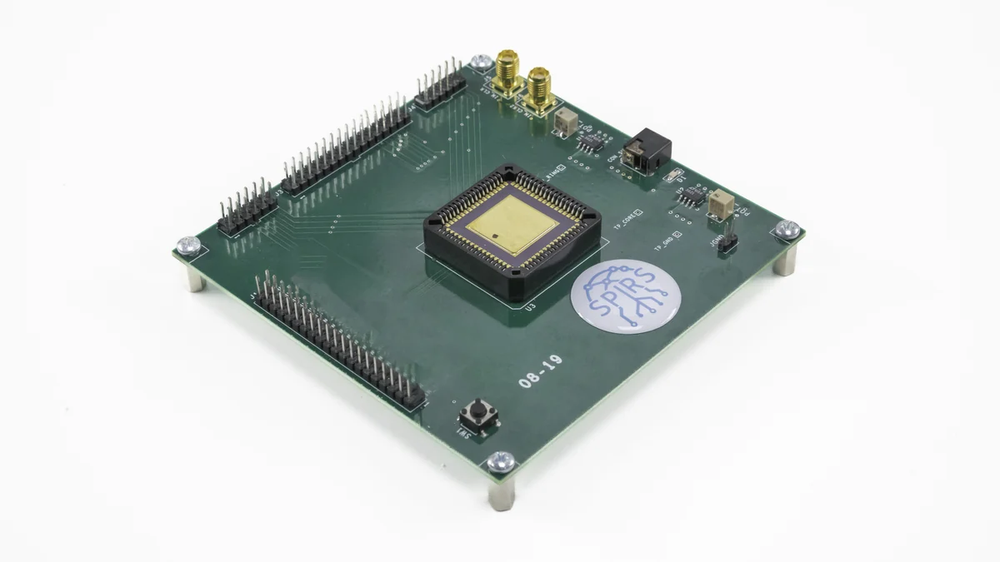
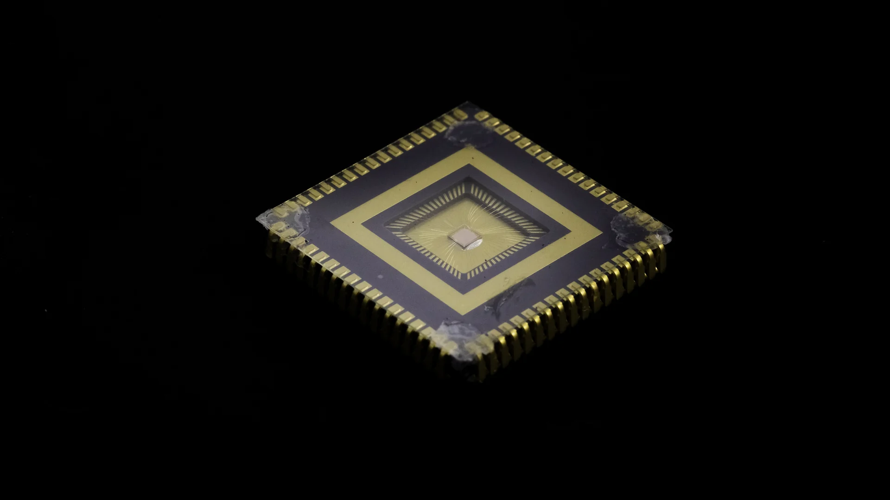
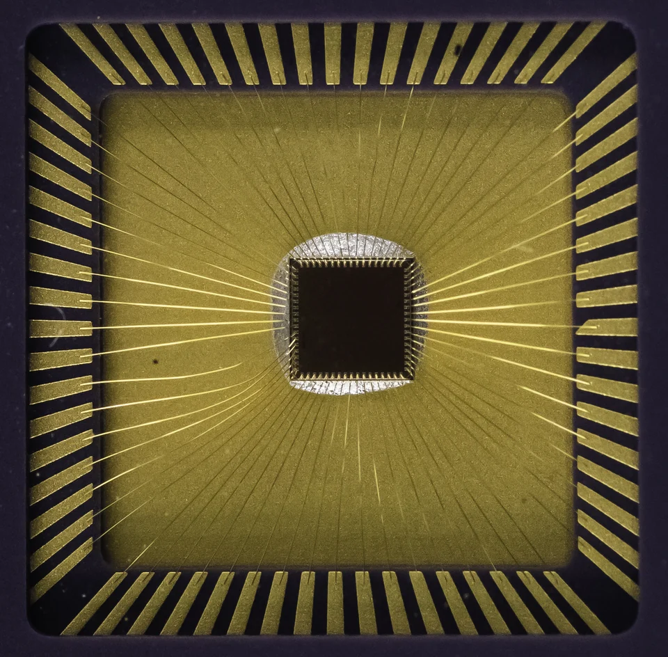
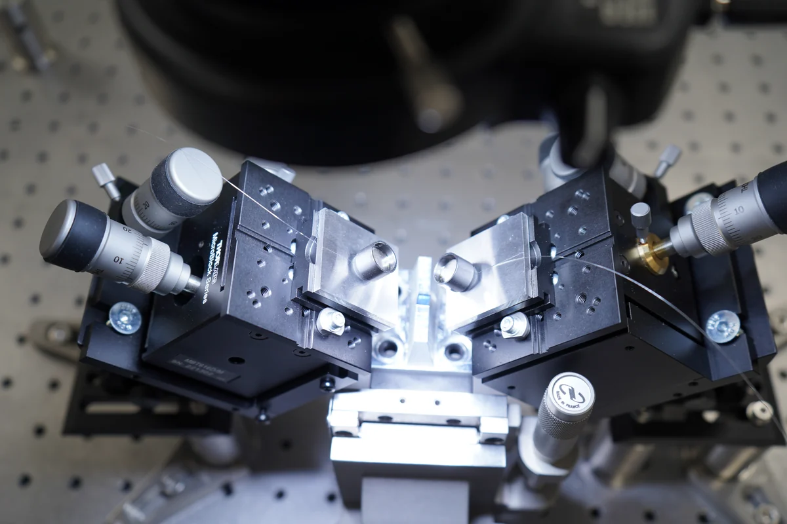
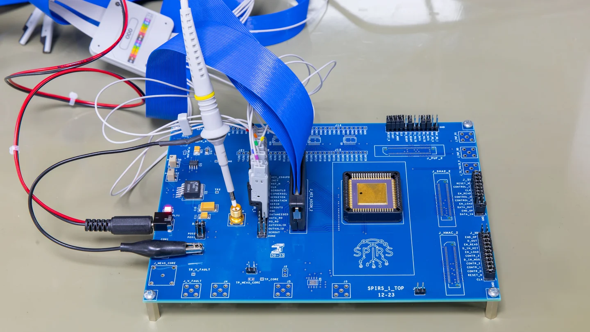
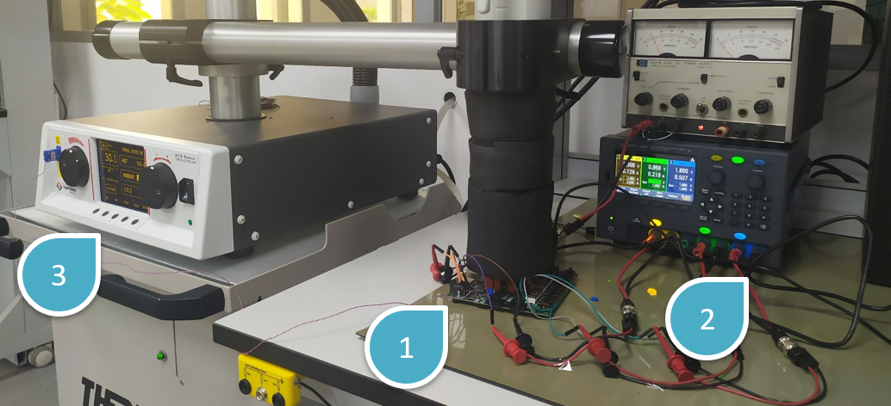
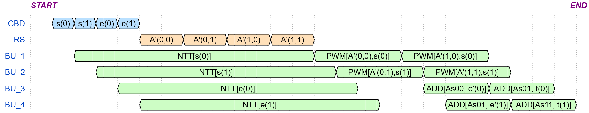
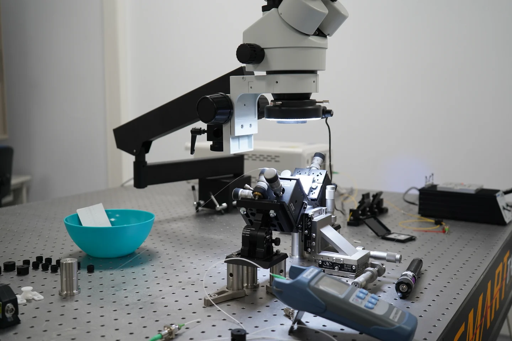
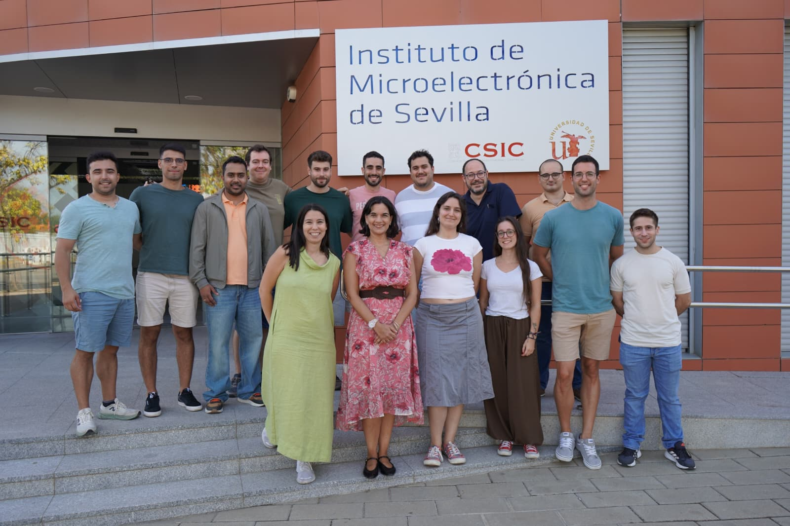

IMSE-CNM · CSIC · Universidad de Sevilla
Trusted Systems-on-Chip based on CMOS and integrated photonics technologies
We design secure systems-on-chip and integrated photonics, from transistor-level primitives to trustworthy die-to-die communication.
RISC-V | PUFs | TRNGs | Side-channel security | Photonic ICs
Wire-bonded chip package
HWSec-CSIC laboratory photographPhoto: Juan Carlos Ortiz (CSIC Andalucía)
Research areas
View all projectsFrom devices to systems
We investigate security at multiple levels, combining hardware design, cryptography and photonics.



Photography · SPIRS: Juan Carlos Ortiz (CSIC Andalucía) · Photonics: Sofía Villar (IMSE-CNM)
Featured research
Authenticated encryptionHardware implementationSide-channel protection
The International Conference on Availability, Reliability and Security (ARES 2026) · 2026ChaCha20-Poly1305
Towards a Side-Channel-Resistant and Scalable ChaCha20-Poly1305 Hardware Implementation
Research into scalable ChaCha20-Poly1305 hardware and side-channel resistance for authenticated encryption, presented at ARES 2026.

Physical securityPUFs and TRNGsLaboratory characterization
Sensors · 2023RO-PUF/TRNG evaluation
On-Line Evaluation and Monitoring of Security Features of an RO-Based PUF/TRNG for IoT Devices
On-line evaluation and monitoring of an RO-based PUF/TRNG for IoT devices, including laboratory characterization under voltage and temperature variations.

Post-quantum cryptographyML-KEMSide-channel protection
IACR Transactions on Cryptographic Hardware and Embedded Systems · 2026HOPE-MLKEM
A Framework for designing High-Order Side-Channel Protected Hardware Implementations of ML-KEM
A framework for designing high-order side-channel-protected ML-KEM hardware, illustrated by the paper’s scheduling strategy for K-PKE.KeyGen.
KECCAKSecond-order maskingHardware security
Proceedings of the 23rd International Conference on Security and Cryptography (SECRYPT) · 2026Second-order masked KECCAK
Efficient Second-Order Masked KECCAK Implementation without Online Fresh Randomness
An efficient second-order masked KECCAK hardware implementation that does not require online fresh randomness, presented at SECRYPT 2026.
65-nm CMOSRO-PUF
IEEE Open Journal of the Solid-State Circuits Society · 2026Ring-oscillator PUFs in 65-nm CMOS
Robust and Scalable Cell-Based 65-nm CMOS RO-PUF Implementation
A robust and scalable ring-oscillator PUF implementation in 65-nm CMOS, using the physical properties of silicon for hardware identity.

CryptoPICIntegrated photonics
AEI · Generación de Conocimiento · 1 Nov 2025 – 30 Oct 2028CryptoPIC
Advanced security in Photonic Integrated Circuits
CryptoPIC investigates physically unclonable functions and cryptographic primitives in photonic integrated circuits.
- Active research areas
- 4
- Publications in the archive
- 27
- Ongoing research projects
- 4
About us
Hardware security
at IMSE-CNM (CSIC)
The security of modern computing infrastructure relies on hardware. At HWSec-CSIC we explore advanced, open approaches to secure systems, including RISC-V architectures and integrated photonics.
We are based at the Instituto de Microelectrónica de Sevilla, a joint centre of CSIC and the Universidad de Sevilla.
Meet the team
Recent publications
View all publicationsRobust and Scalable Cell-Based 65-nm CMOS RO-PUF Implementation
IEEE Open Journal of the Solid-State Circuits Society
Link
Citation
Plain-text citation
P. Ortega-Castro, E. Camacho-Ruiz, J. M. Mora-Gutiérrez, P. Brox, M. C. Martínez-Rodríguez. Robust and Scalable Cell-Based 65-nm CMOS RO-PUF Implementation. IEEE Open Journal of the Solid-State Circuits Society, 2026. https://doi.org/10.1109/OJSSCS.2026.3689804
BibTeX
BibTeX
@article{ortegacastro2026d23c0b,
author = {P. Ortega-Castro and E. Camacho-Ruiz and J. M. Mora-Gutiérrez and P. Brox and M. C. Martínez-Rodríguez},
title = {{Robust and Scalable Cell-Based 65-nm CMOS RO-PUF Implementation}},
journal = {IEEE Open Journal of the Solid-State Circuits Society},
year = {2026},
doi = {10.1109/OJSSCS.2026.3689804}
}Hardware-Rooted Device Identity for IoT: Integrating Silicon PUFs and DICE in RISC-V Embedded Systems
IEEE Access · Vol. 14
Link
Citation
Plain-text citation
S. Sisinni, L. Ferro, E. Bravi, P. Navarro-Torrero, E. Camacho-Ruiz, M. C. Martínez-Rodríguez, P. Brox, A. Lioy. Hardware-Rooted Device Identity for IoT: Integrating Silicon PUFs and DICE in RISC-V Embedded Systems. IEEE Access, vol. 14, 2026. https://doi.org/10.1109/ACCESS.2026.3674839
BibTeX
BibTeX
@article{sisinni20261c258d,
author = {S. Sisinni and L. Ferro and E. Bravi and P. Navarro-Torrero and E. Camacho-Ruiz and M. C. Martínez-Rodríguez and P. Brox and A. Lioy},
title = {{Hardware-Rooted Device Identity for IoT: Integrating Silicon PUFs and DICE in RISC-V Embedded Systems}},
journal = {IEEE Access},
year = {2026},
volume = {14},
doi = {10.1109/ACCESS.2026.3674839}
}A Framework for designing High-Order Side-Channel Protected Hardware Implementations of ML-KEM
IACR Transactions on Cryptographic Hardware and Embedded Systems · Vol. 2026 · No. 2 · pp. 272-295
Link
Citation
Plain-text citation
E. Camacho-Ruiz, P. Navarro-Torrero, A. Cabrera Aldaya. A Framework for designing High-Order Side-Channel Protected Hardware Implementations of ML-KEM. IACR Transactions on Cryptographic Hardware and Embedded Systems, vol. 2026, no. 2, pp. 272-295, 2026. https://doi.org/10.46586/tches.v2026.i2.272-295
BibTeX
BibTeX
@article{camachoruiz2026067c04,
author = {E. Camacho-Ruiz and P. Navarro-Torrero and A. Cabrera Aldaya},
title = {{A Framework for designing High-Order Side-Channel Protected Hardware Implementations of ML-KEM}},
journal = {IACR Transactions on Cryptographic Hardware and Embedded Systems},
year = {2026},
volume = {2026},
number = {2},
pages = {272--295},
doi = {10.46586/tches.v2026.i2.272-295}
}Research projects
View all projectsQ-FENCE
OngoingHorizon Europe
1 Nov 2025 – 31 Oct 2028
A hybrid security framework combining classical, quantum and post-quantum cryptographic techniques to protect digital infrastructure.
DECIDE
OngoingChips JU
1 Jan 2025 – 31 Dec 2028
A virtual chip design platform that broadens access to advanced semiconductor technologies for European startups, SMEs and research institutions.
QUBIP
CompletedHorizon Europe
1 Sep 2023 – 31 Aug 2026
Methods and recommended practices for migrating browsers and infrastructure to post-quantum cryptography, with a focus on making the transition repeatable.
SQPRIM
CompletedMSCA · Horizon Europe
1 Jul 2023 – 31 Aug 2025
Optical and ultrasound physically unclonable functions (PUFs) for robust device identification in the post-quantum era.
GoIT
CompletedHorizon Europe
1 Sep 2022 – 28 Feb 2025
Open-source silicon and hardware platforms to support European digital independence and technological sovereignty.
SPIRS
CompletedHorizon 2020
1 Oct 2021 – 30 Sep 2024
An open hardware platform combining a dedicated root of trust and a processor core. The project explores secure boot, trusted execution and decentralised trust for IoT, 5G and Industry 4.0 systems.
CryptoPIC
OngoingAEI · Generación de Conocimiento
1 Nov 2025 – 30 Oct 2028
Physical unclonable functions and cryptographic primitives in photonic integrated circuits, with a focus on miniaturisation and standard CMOS fabrication.
ARES
CompletedAEI · Generación de Conocimiento
1 Sep 2021 – 31 Oct 2025
Hardware roots of trust resistant to attacks, combining physically unclonable functions and cryptographic primitives for RISC-V and ARM-based IoT devices.
TECHNOQUANTUM
OngoingCSIC · iLINK
1 Jan 2025 – 31 Dec 2026 (year-based dates)
Collaborative research on microelectronic and nanophotonic technologies for secure digital systems in the post-quantum world.